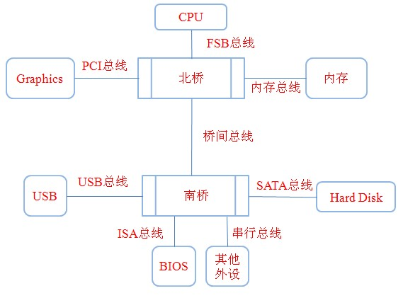
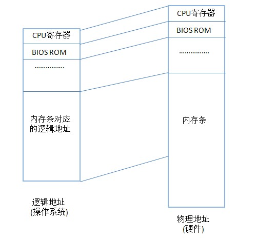

借由这个问题，今天我们就把 32 位 CPU、64 位 CPU、32 位操作系统、64 位操作系统之间的区别与联系彻底搞清楚。对于这个问题，博主也是一知半解了好长时间啊~
基本概念
32位的CPU与64位CPU
以下内容摘自维基百科：
64 位 CPU 是指 CPU 内部的通用寄存器的宽度为 64 比特，支持整数的 64 比特宽度的算术与逻辑运算。那么 32 位 CPU 同理。
一个 CPU，联系外部的数据总线与地址总线，可能有不同的宽度；术语“64位”也常用于描述这些总线的大小。不过这一术语也可能指电脑指令集的指令长度，或其它的数据项。去掉进一步的条件，“64位”电脑架构一般具有 64 位宽的整数型寄存器，它可支持 64 位“区块”的整数型数据。
64 位架构无疑可应用在需要处理大量数据的应用程序，如数字视频、科学运算、和早期的大型数据库。
那么 32 位 CPU 与 64 位 CPU 到底有什么区别？
- 数据处理能力增强：64 位 CPU 通用寄存器的位宽增加一倍，这也就意味着 64 位 CPU 可以一次性处理 64bit 的整形数据；
- 内存寻址能力增强：如果是 32 位 CPU 的话，它的地址总线最多不会超过 32，那么它所能达到的寻址范围也就不会超过 2 的 32 次方字节（存储单元以字节为单位），也就是 4GB，而如果是 64 位处理器的话，它所能达到的寻址范围理论上就会是 2 的 64 次方字节（上亿 GB）。
补充：一般处理器多少位是指通用寄存器的长度，当然数据线需要与之相同；地址线则不需要与之相等，好比 intel 64 位处理器则是 40 位地址总线，最大支持 1TB 的内存寻址。
32位操作系统与64位操作系统
平时我们所说的 32 位操作系统也被称为 X86 系统，x64 代表 64 位操作系统，关于它的简略解释：为什么32位的计算机系统不叫x32而叫x86呢？
关于 32 位操作系统与 64 位操作系统的区别如下：
32 位操作系统既可以运行在 32 位的 CPU 上，也可以运行在 64 位的 CPU 上，只不过，运行在 64 位 CPU 上的话，就有点“大马拉小车”的感觉了——无法发挥出 CPU 的全部能力。
64 位操作系统只能运行在 64 位的 CPU 上，因此如果一个操作系统是 64 位，那么它的 CPU 架构也必定是 64 位。
64 位操作系统相比于 32 位操作系统的优势正如上述 64 位 CPU 与 32 位 CPU 的优势一样。
总线结构与主板构成
注：以下两部分内容摘抄自：32位系统最大只能支持4GB内存之由来~
在解决本文标题所述的问题之前，我们再来了解一些关于总线结构与主板构成的相关知识。
说起总线大家肯定不陌生，而且大家平时肯定跟它打过交道，我们在用U盘拷贝数据的时候先要把U盘通过USB接口与电脑相连才能拷贝。USB接口实际上就是一种总线，一般称这种总线为USB总线（也叫做通用串行总线）。在很久之前是没有USB总线的，那个时候每个外设各自采用自己的接口标准，举个最简单的例子：鼠标生产厂商采用鼠标特有的接口，键盘生产厂商用键盘特有的接口，这样一来的话，PC机上就必须提供很多接口，这样一来增加了硬件设计难度和成本，直到后来USB接口的出现，它统一了很多外设接口的标准，不仅使得用户可以很方便地连接一些外设，更增强了PC的可扩展性。所以现在大家看到的鼠标、键盘、U盘、打印机等等这些外设都可以直接通过USB接口直接插到电脑上的。
在计算机系统中总线是非常重要的一个概念，正是因为有了总线，所有的组成部件才能一起正常协同分工合作。在很久以前的PC机中，采用的是三总线结构，即：数据总线、地址总线、控制总线。它们分别用来传输不同类型的数据，数据总线用来传输数据，地址总线用来传输地址，控制总线用来传输一些控制信号。
随着时代的发展，这种简单的总线结构逐渐被淘汰。下面这幅图是现代计算机采用的结构：

事实上这也是现代主板所采用的结构，当然可能部分地方有略微不同（大体结构是差不多的），仔细观察过主板构成的朋友可能对上面一幅图很熟悉。在主板上主要有两大主要部分：北桥（North Bridge也称Host Bridge）和南桥（South Bridge）。北桥主要负责CPU和内存、显卡这些部件的数据传送，而南桥主要负责I/O设备、外部存储设备以及BIOS之间的通信。现在有些主板已经没有北桥了，因为芯片厂商已经把北桥所负责的功能直接集成到CPU中了（不过暂且我们以上副图的模型来讨论）。
在上副图中，我没有画出数据总线和地址总线等，因为在某些总线标准中它们被集成到一起了，比如在PCI总线中，地址总线和数据总线总是分时复用的（也就是说假如PCI总线有32位数据总线，这32位总线在某个时刻可以充当数据总线的作用，在下一时刻可以充当地址总线的作用）。有的总线同时提供了数据总线和地址总线。
下面来说一下几个主要总线和南北桥的作用：
FSB总线：即前端总线（Front Side Bus），CPU和北桥之间的桥梁，CPU和北桥传递的所有数据必须经过FSB总线，可以这么说，FSB总线的频率直接影响到CPU访问内存的速度。
北桥：北桥是CPU和内存、显卡等部件进行数据交换的唯一桥梁，也就是说CPU想和其他任何部分通信必须经过北桥。北桥芯片中通常集成的还有内存控制器等，用来控制与内存的通信。现在的主板上已经看不到北桥了，它的功能已经被集成到CPU当中了。
PCI总线：PCI总线是一种高性能局部总线，其不受CPU限制，构成了CPU和外设之间的高速通道。比如现在的显卡一般都是用的PCI插槽，PCI总线传输速度快，能够很好地让显卡和CPU进行数据交换。
南桥：主要负责I/O设备之间的通信，CPU要想访问外设必须经过南桥芯片。
在了解了这些基础东西之后，下面来讲解一下为何 32 位系统最大只支持 4GB 内存。（是的，就算是 64 位的 CPU，装载 32 位的操作系统，它的寻址能力还是 4GB。）
对于标题的解释
在使用计算机时，其最大支持的内存是由操作系统和硬件两方面决定的。
先说一下硬件方面的因素，在上面已经提到了地址总线，在计算机中 CPU的地址总线数目 决定了CPU 的 寻址 范围，这种由地址总线对应的地址称作为物理地址。假如CPU有32根地址总线（一般情况下32位的CPU的地址总线是32位，也有部分32位的CPU地址总线是36位的，比如用做服务器的CPU），那么提供的可寻址物理地址范围 为 232=4GB（在这里要注意一点，我们平常所说的32位CPU和64位CPU指的是CPU一次能够处理的数据宽度，即位宽，不是地址总线的数目）。自从64位CPU出现之后，一次便能够处理64位的数据了，其地址总线一般采用的是36位或者40位（即CPU能够寻址的物理地址空间为64GB或者1T）。在CPU访问其它任何部件的时候，都需要一个地址，就像一个快递员送快递，没有地址他是不知道往哪里送达的，举个例子，CPU想从显存单元读取数据，必须知道要读取的显存单元的实际物理地址才能实现读取操作，同样地，从内存条上的内存单元读取数据也需要知道内存单元的物理地址。换句话说，CPU访问任何存储单元必须知道其物理地址。
用户在使用计算机时能够访问的最大内存不单是由CPU地址总线的位数决定的，还需要考虑操作系统的实现。实际上用户在使用计算机时，进程所访问到的地址是逻辑地址，并不是真实的物理地址，这个逻辑地址是操作系统提供的，CPU在执行指令时需要先将指令的逻辑地址变换为物理地址才能对相应的存储单元进行数据的读取或者写入（注意逻辑地址和物理地址是一一对应的）。
对于32位的windows操作系统，其逻辑地址编码采用的地址位数是32位的，那么操作系统所提供的逻辑地址寻址范围是4GB，而在intel x86架构下，采用的是内存映射技术(Memory-Mapped I/O, MMIO)，也就说将4GB逻辑地址中一部分要划分出来与BIOS ROM、CPU寄存器、I/O设备这些部件的物理地址进行映射，那么逻辑地址中能够与内存条的物理地址进行映射的空间肯定没有4GB了，看下面这幅图就明白了：

所以当我们装了32位的windows操作系统，即使我们买了4GB的内存条，实际上能被操作系统访问到的肯定小于4GB，一般情况是3.2GB左右。假如说地址总线位数没有32位，比如说是20位，那么CPU能够寻址到1MB的物理地址空间，此时操作系统即使能支持4GB的逻辑地址空间并且假设内存条是4GB的，能够被用户访问到的空间不会大于1MB（当然此处不考虑虚拟内存技术），所以用户能够访问到的最大内存空间是由硬件和操作系统两者共同决定的，两者都有制约关系。
于64位的操作系统，其逻辑地址编码采用的地址位数是40位，能够最大支持1T的逻辑地址空间。考虑一种情况，假如CPU是64位的，地址总线位数是40位，操作系统也是64位的，逻辑地址编码采用的地址位数也是40位，内存条大小是64GB，那么是不是内存条的64GB全部都能被利用了呢？答案是不一定，因为这里面还要考虑一个因素就是内存控制器，内存控制器位于北桥之内（现在基本都是放在CPU里面了），内存控制器的实际连接内存的地址线决定了可以支持的内存容量，也就是说内存控制器与内存槽实际连接的地址线如果没有40位的话，是无法完全利用64GB的内存条的存储空间的。当然对于内存控制器这个问题几乎可以不用考虑，因为现在大多数的内存控制器至少都采用的是40位地址总线。
总结
对于以上所述，我进行一下简单的总结：
一个计算机，它的内存访问能力是由硬件和软件共同决定的。硬件层面就指 CPU 的寻址能力，也就是地址总线的个数。软件层面，指的就是操作系统。实际上我们（进程）在进行内存访问的时候，访问的都是逻辑地址，而逻辑地址是由操作系统提供的。对于 32 位的操作系统，其逻辑地址编码采用的地址位数是 32 位，那么操作系统所提供的逻辑地址寻址范围就是 4GB。从这个方面来说，纵使你的 CPU 实际寻址能力为 2 的 64 次方，由于操作系统只提供 4GB 的逻辑地址，那 CPU 透过操作系统所能访问到的内存大小也就只有4GB了。
对与上述总结，我还有一个简单的补充：
在和我的大神小伙伴讨论的时候，他对于“为什么 64 位 CPU 装载 32 位操作系统，它的寻址能力还是 4GB”这个问题的解答，只说了一句话：“32 位操作系统没有对应 64 位的寻址指令”。在细细品味之后，觉得颇有道理，我对于这句话的浅显理解是：32 位操作系统没有对应 64 位的寻址指令，所以它不能提供 4GB 以上的逻辑地址，所以 64 位 CPU 透过 32 位操作系统，它的寻址能力依旧是 4GB。
参考阅读
维基百科：64位